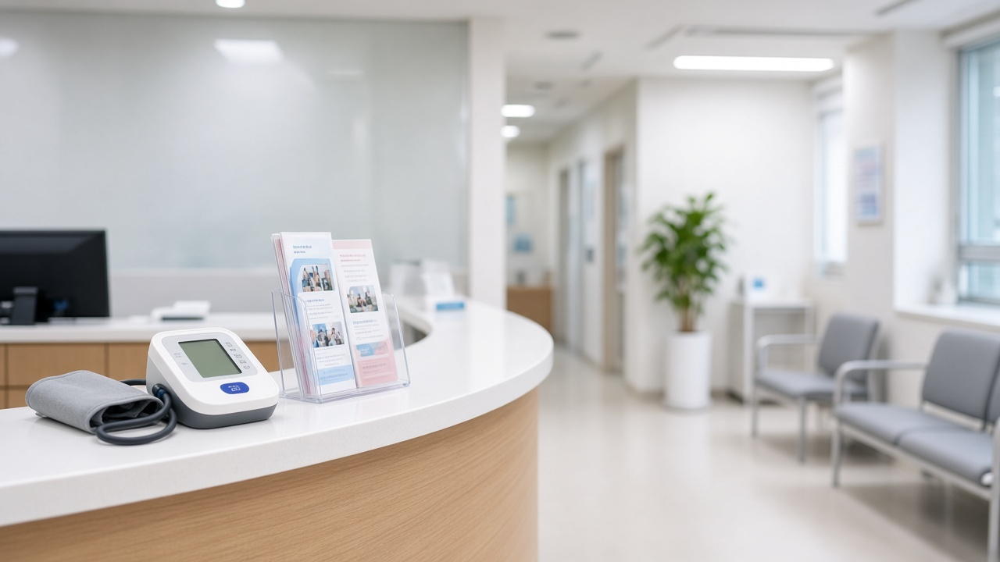
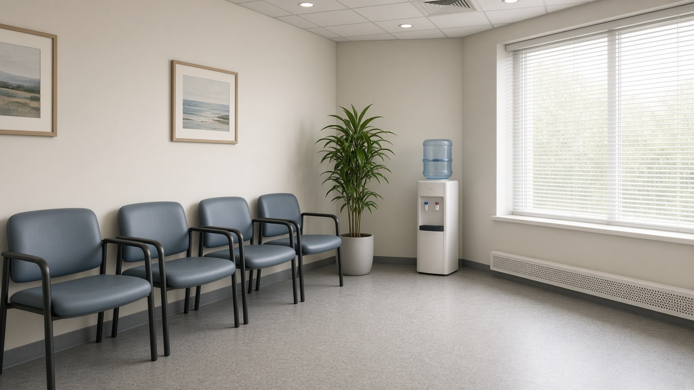

고혈압 당뇨병 등록교육센터가 만성질환 통합관리센터로 바뀌어요, 의료비 지원은 연 최대 8만 점 건강생활실천지원금으로 전환돼요

보건소 고혈압 당뇨병 등록교육센터에 등록해 두고 약값이나 진료비 일부를 지원받아 오셨다면 요즘 들려오는 개편 소식이 꽤 신경 쓰이실 거예요.
반대로 우리 동네에는 그런 센터가 없어서 아예 혜택을 받아 본 적이 없다는 분도 많으실 거고요.
질병관리청이 9월 30일 개편 방향을 내놓은 데 이어 11월 5일 기존 센터를 언제 어떻게 바꿀지 이행 방안을 발표했어요.
지금 등록된 분은 무엇이 그대로이고 무엇이 달라지는지, 등록 지역이 아닌 분은 언제쯤 기대해 볼 수 있는지 순서대로 정리해 볼게요.
고당센터는 2027년까지 이름과 기능을 그대로 두고 2028년부터 통합관리센터가 돼요
지금 고혈압과 당뇨병 등록관리사업이 운영되는 곳은 전국 19개 시군구예요.
서울 성동구, 경기 광명시 남양주시 하남시 안산시 부천시, 광주 광산구, 울산 중구, 세종시, 강원 동해시 홍천군, 전북 진안군, 전남 목포시 여수시 장성군, 경북 경주시 포항시, 경남 사천시, 제주 제주시가 여기에 해당해요.
질병관리청은 이 19곳의 센터를 2027년 한 해 동안 전환 준비 기간으로 운영하기로 했어요.
이 기간에는 센터 이름도 고혈압 당뇨병 등록교육센터 그대로 쓰고, 교육과 상담, 알림 같은 관리 기능도 계속 유지돼요.
2027년 말에 전환 실적과 사업 추진 실적을 평가한 뒤 2028년부터 만성질환 통합관리센터로 바꿔 운영하는 순서예요.
그러니 지금 등록된 분이라면 당장 내일부터 센터를 이용하지 못하게 되는 일은 아니라고 보시면 돼요.

기존 의료비 지원은 건강생활실천지원금으로 바뀌고 한도는 연 최대 8만 점이에요
가장 크게 달라지는 부분은 돈이 지원되는 방식이에요.
지금까지 고당센터 등록 환자는 한 사람당 1년에 최대 4만 2천 원에서, 고혈압과 당뇨병을 함께 앓는 경우 6만 6천 원까지 의료비를 지원받았어요.
앞으로는 이 의료비 지원이 보건복지부의 일차의료 만성질환관리 사업과 연계된 건강생활실천지원금으로 바뀌고, 한도는 1년에 최대 8만 점, 금액으로 8만 원까지예요.
질병관리청은 기존보다 약 2배 수준이라고 설명했어요.
다만 건강생활실천지원금은 걷기나 교육 같은 건강생활을 실천했을 때 포인트가 쌓이는 방식이라, 예전처럼 등록만 해 두면 정해진 금액이 나오는 구조와는 결이 달라요.
쌓인 포인트는 2025년 12월 15일부터 별도 카드를 만들지 않아도 사업에 참여하는 동네 의원에서 진료를 받은 뒤 보유 포인트 안에서 진료비를 결제할 수 있게 바뀌었어요.
개인별 전환 시점과 신청 절차는 지자체와 센터가 따로 안내하겠다고 했으니, 등록하신 보건소 연락을 꼭 챙겨 보세요.
왜 이렇게 바꾸는지 숫자로 보면 이해가 쉬워요
이 사업은 2007년 지자체 한 곳에서 시작해 2012년 19곳까지 늘었지만 그 뒤로 14년 넘게 한 곳도 더 늘지 않았어요.
전국 226개 기초자치단체 가운데 8.4퍼센트에 그치는 규모예요.
65세 이상 고혈압 환자 609만 명 가운데 이 사업에 등록해 관리받는 분은 약 40만 명으로 6.6퍼센트 수준이라고 해요.
게다가 어르신 환자가 늘면서 의료비 지원 예산이 해마다 일찍 바닥나, 지원금을 제때 받지 못하는 일도 생겼다고 질병관리청은 설명했어요.
건강보험 재정에서 나오는 건강생활실천지원금으로 바꾸는 건 이 예산 문제를 풀고 사업을 더 많은 지역으로 넓히기 위한 선택이라는 거예요.
등록 지역이 아니라면 2027년 7월 새 센터 가동을 지켜보세요
19곳 바깥 지역은 2027년 상반기에 공모를 거쳐 새로 사업 지역을 뽑고, 같은 해 7월부터 만성질환 통합관리센터를 가동할 예정이에요.
새 센터는 연령 제한 없이 모든 연령의 환자에게 교육과 상담, 알림 같은 관리 서비스를 제공하는 방향이에요.
지금은 30세 이상 고혈압과 당뇨병 환자가 중심이지만, 앞으로 관리 대상을 모든 연령으로 넓히고 이상지질혈증 같은 질환도 차례로 더해 갈 계획이라고 해요.
우리 지역이 언제 포함될지는 아직 정해지지 않았으니, 내년 상반기 공모 결과가 나올 때 거주지 보건소 소식을 확인해 보시는 게 좋아요.
지금 등록된 분이 미리 챙겨 두면 좋은 것들
먼저 등록한 보건소나 센터에 연락처가 바르게 남아 있는지 확인해 두세요.
전환 안내가 문자나 전화로 올 가능성이 높아서 번호가 바뀌었다면 안내를 놓치기 쉬워요.
지금 다니는 동네 의원이 일차의료 만성질환관리 사업에 참여하는 곳인지도 물어보시면 좋아요.
포인트로 진료비를 결제하려면 참여 의원에서 진료를 받아야 하기 때문이에요.
질병관리청은 지자체와 의료기관, 환자를 대상으로 설명회를 열고 홍보를 늘리겠다고 했으니, 세부 기준이 나오면 그 안내를 기준으로 판단하시면 돼요.
궁금한 점은 질병관리청 대표전화 1339나 등록한 보건소에 물어보시면 가장 정확해요.
지원금은 치료를 대신하는 제도가 아니니, 혈압과 혈당 관리는 지금처럼 다니시는 의료기관과 상의하며 이어 가세요.
참고 자료 질병관리청 2026년 11월 5일 보도참고자료 고혈압 당뇨병 등 만성질환 관리 만성질환 통합관리센터로 전국 단계적 확대, 질병관리청 2026년 9월 30일 보도참고자료 일부 지역에 머물던 만성질환 관리 더 많은 지역으로 확대, 보건복지부 2025년 12월 15일 정책브리핑 건강생활실천지원금 진료비 결제 때 포인트 자동 차감, 뉴시스 2026년 9월 30일 기사
태그 만성질환통합관리센터 고당센터 고혈압당뇨병등록교육센터 건강생활실천지원금 일차의료만성질환관리 고혈압관리 당뇨병관리 이상지질혈증 질병관리청 보건소